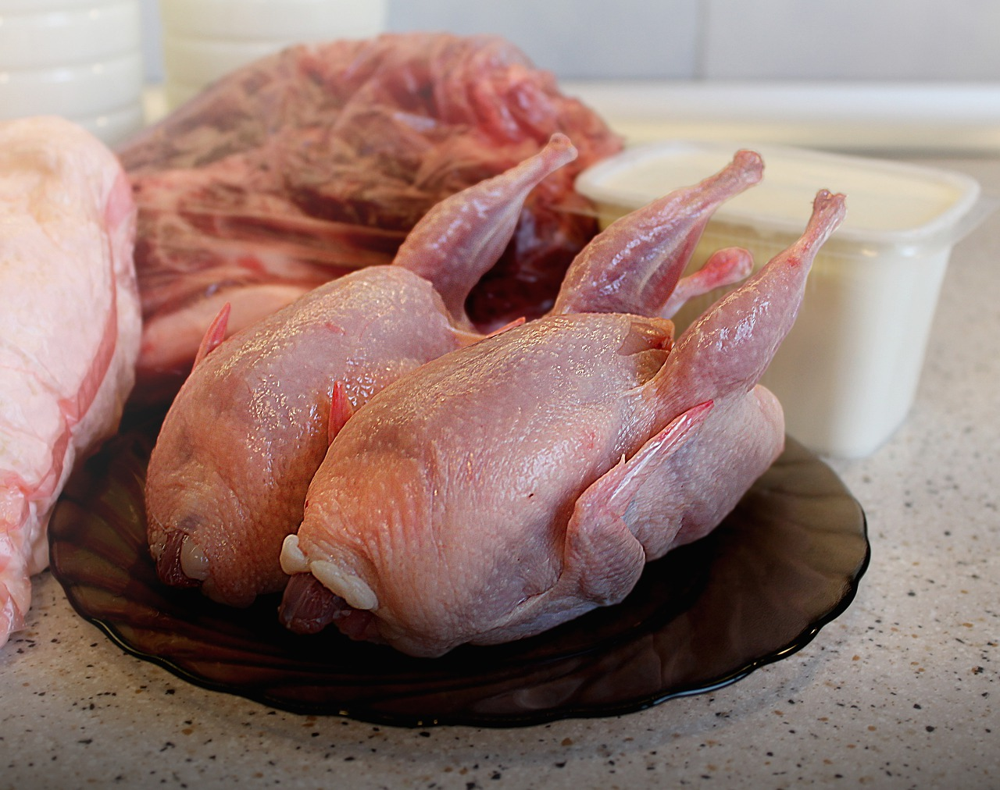

Calories in Meat > Calories in quail meat
Calories in quail meat
Quail are more popular for their tiny speckled eggs than their meat. Like other poultry, quail are rich in protein and are good sources of zinc and B-vitamins. They have tender and flavorful flesh that has a more defined taste than chicken.
Nutritional Values per 100g:
- Calories – 116.7 kcal
- Protein – 24g
Calories in quail meat are described in detail on the Calorie-Charts.info.